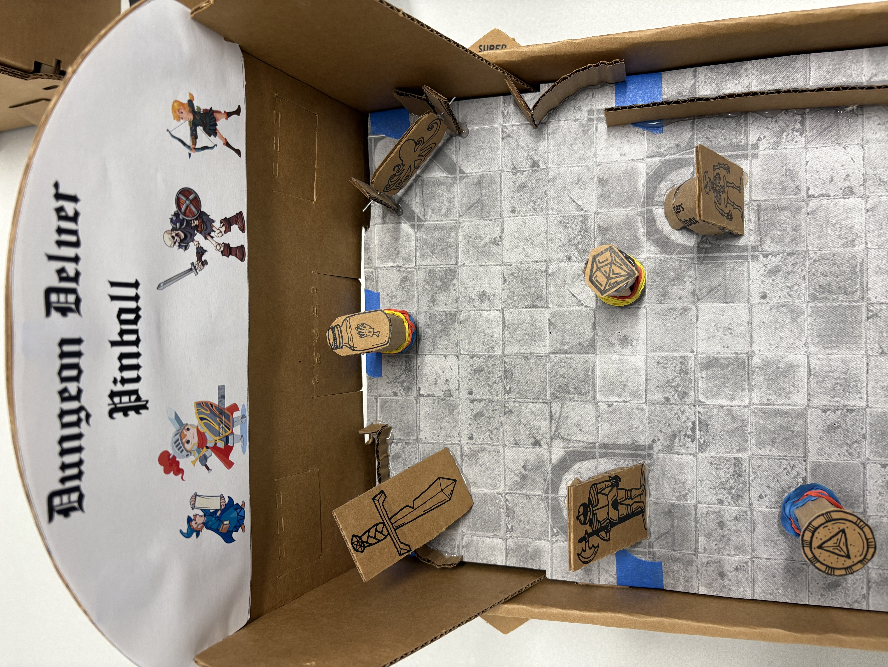
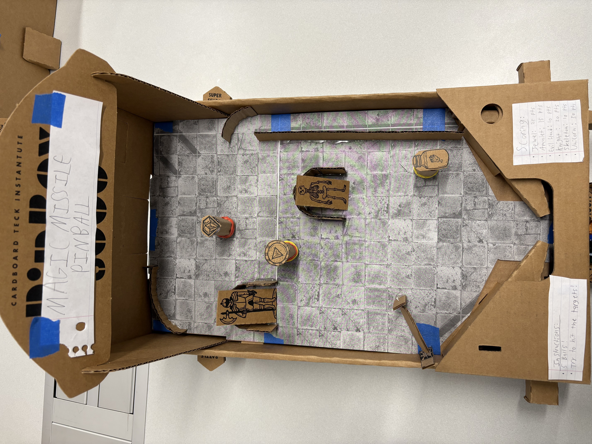
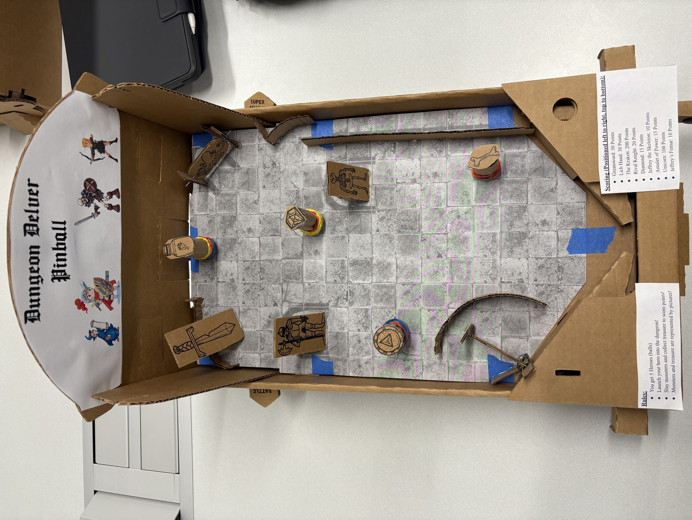
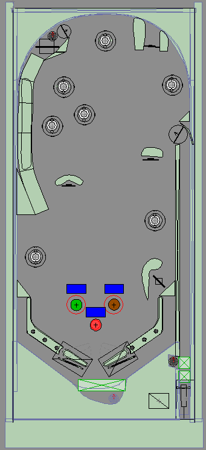
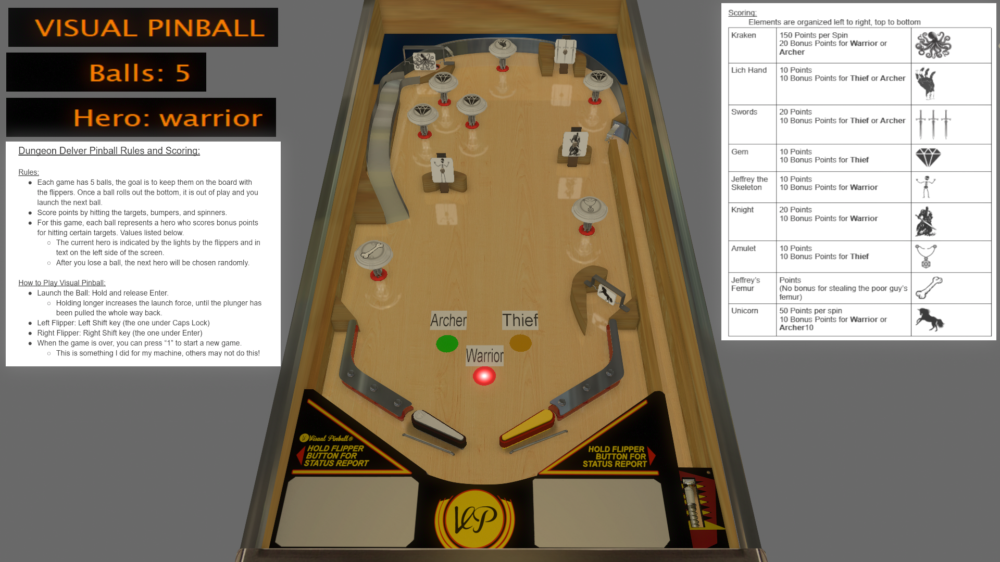

Dungeon Delver Pinball is a pinball game I designed for my Pinball Design and Development course.
I created a cardboard prototype with the Pinbox 3000 kit,
as well as a digital version using Visual Pinball and scripting it in Visual Basic.
The game is designed after dungeon-crawler RPGs where heroes battle monsters and grab treasure.
The cardboard prototype is overall very simple. It features some rudimentary targets, bumpers and spinners.
The pieces are made of cardboard and attached with hot glue.
The targets are made of cardboard, and are attached to a rounded base to angle them towards the player
and prevent the ball from getting stuck.
The bumpers are made of cardboard tubes wrapped in rubber bands.
The spinners are made of cardboard with a paperclip glued into each end and pushed through cardboard
supports.
I took care to ensure the paperclips had tolerance with the supports to spin freely,
and used hot glue to weigh down the bottom of the cardboard pieces so they would return to the desired
resting position.
This prototype proved difficult to play, as the player was tasked with tracking their own score,
but many playtesters enjoyed the concept and engineering of it.
The digital version is much closer to a fully-fledged pinball game.
Visual Pinball tracks the score and how many balls the player has left.
The player gets five balls, and each is randomly assigned a hero class: Warrior, Archer, and Thief,
represented by lights in the middle of the play area.
The Warrior scores more points for hitting "monster" elements,
the Archer scores more points for hitting elements at the back of the machine,
and the Thief scores more points for hitting "Treasure" elements.
Changing the "class" of the ball is intended to force players to change what elements they target to
maximize their score.
The digital version proved much more exciting for players, and tends to run smoother than the cardboard
prototype.
Both versions of the game were exhibited at Imagine RIT
and at the Strong National Museum of Play in 2025.
I was tasked with explaining the class, overall the project and my specific machines to visitors.
I also oversaw playtests of my machines, and handed out flyers for the Strong Museum.
Lastly, both versions of the project required blog posts detailing how they were made and the
design philosophies behind the game.

The original cardboard prototype, called Magic Missile Pinball.

The final cardboard version of Dungeon Delver Pinball.

The Visual Pinball editor view of Dungeon Delver Pinball.

The gave view of Dungeon Delver Pinball.
NOTE: Requires installation of Visual Pinball software, found HERE
Cardboard Prototype Blog